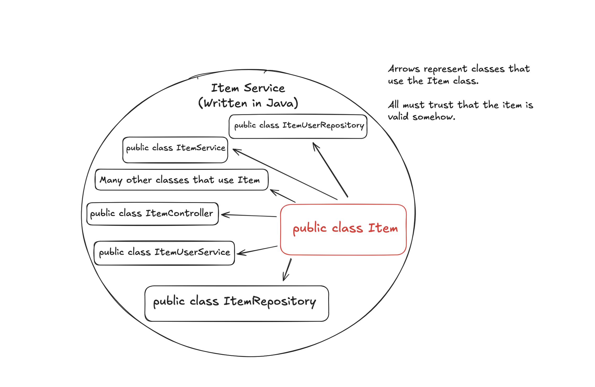
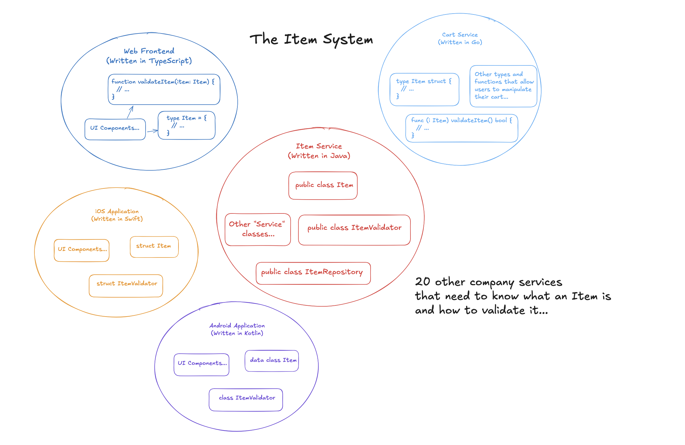

Command Handlers Don’t Scale
-- Minutes to Read
Commands are a relatively simple concept that we have an intuition of in society. If I command you to perform some action, it is therefore socially acceptable for you to carry out that action in the manner I commanded you to do it.
As a society we’ve used this technique in many large-scale technical and societal systems designs over the course of many centuries. Often, the results have been far less than ideal, and have caused stagnation or even degredation for those involved.
In fields like programming, the concept of a command handler may have
a formal definition depending on the context within the field (eg.
CQRS or implementing a formal interface named
XXXCommandHandler). In some senses, such definitions may
play into the larger abstract ideas of what a command handler means in
the grand scheme of things, but inherently they are not the focus of
this article.
Programming is certainly one of the many domain examples we’ll cover, as I imagine it largely would correlate with the audience. However, it’s apparent that we see the root systemic principle behind the notion of “commanding” something, and why it faces scaling issues if we are to understand how new systems should behave. This involves looking beyond just the programming domain, and requires us to look into other adjacent and non-adjacent domains such as UI/UX design, corporate structure, and forms of government. Either in shape or form, all of these domains carry major systems design issues around the notion of command handling.
We’ll start by defining what commands and command handlers are. Then, we’ll look at how such principles violate the laws of scaling, and how they are poorly used in existing domains. Afterwards, we’ll touch upon a new principle that has been used in many large-scale systems present today, and why it can combat many of the scaling issues that command handling faces. In doing so, I’ll cover a few ways to restructure command handling systems to follow this new principle. Lastly, we’ll touch upon the notion of when and where command handling should be used in conjunction with the newer principle.
This article will largely have a broad focus on many domains, as such deeper dives into specific domains may not be fully addressed.
Defining Commands and Command Handlers
We can start quite small when thinking about the notion of commands. In fact, the first line of code that programmers often write is something along the lines of.
console.log("Hello World")
In this case, our small system is commanding the operating system to
print "Hello World" to standard output.
As one progresses in their programming journey, they may learn about something called a function, or possibly as something similar with a different name. It turns out that these function things are pretty useful for reusing code.
let number = 0
const increment = () => {
number++
}
increment()
increment()
console.log(`The number is now ${number}!`)
However, once again we can see that these function things have doubled as commands. Now the system has a concept of an incrementing command. When the command is imposed on the number, it will be incremented with no objections.
The “no objections” part is key here, as it implies an order that must be enacted. Such an order is therefore a command, and the one who carries out such orders is a command handler. In this article, we’ll also refer to the actor that creates commands as a commander.
The requirements for your current project at work may be something that you must carry out at all costs. A rule of law that is imposed by a government is also something that must be adhered to at all costs. The order that a user placed using the Uber Eats app is also something that must be carried out at all costs. In all cases, these orders, laws, and requirements are defined as commands, those who carry them out are the command handlers, and those who create the commands are the commanders.
Scaling Issues
So, why don’t command handlers scale?
First, we should be careful to use the term “scale” in the general sense. That of a term that refers to increasing or enlarging the dimensions of a system.
For command handlers, we can generally think of those dimensions as the number of commands to handle, and the different variants of the commands to handle. Therefore, a command handler operating at scale generally has to deal with both a higher volume of many varied commands than a handler operating at less of a scale. For increasingly enlarging systems, this often means that an inconceivable volume of command combinations need to be handled at scale.
This higher volume of commands and command variants stems from more and different “commanders” invoking the command handler than before. Combinations of commands can be formed by the ordering in which different commanders send commands.
In programming, this could mean calling a set of 100 functions in different combinatorical orders. In a company, this could mean many different product teams or departments imposing requirements on a single product team. In government, this could mean imposing many different laws and regulations on its citizens. In all of these cases, the volume of commands and their combinations are incredibly hard to predict and regulate.
For such a dynamic to work properly, the commander has to trust that they are properly commanding the handler, and likewise the handler has to trust that they are being handed the right commands. If any single party breaks this bidirectional notion of trust, bad things often happen.
In programming, if a set of functions are called in the wrong order, bugs occur. In a company, if a product team receives unattainable, ambiguous, or conflicting requirements with no room for negotiation from different departments, confusion and stress occurs. In government, if the rules of law it imposes on its citizens interfere with their civil rights, it becomes authoritarian, and invigorates its citizens.
At increasingly larger scales, the volume and variations of commands becomes increasingly harder to understand. Therefore, could you really trust in those cases that both parties work together correctly?
The evidence has shown this to generally be a resounding “no” in many systems. Of course, parties with better chemistry may handle increasing scales more effectively, but no one can handle infinity. Yet, in practice we can often find many cases where this is violated.
Violations in Code
In the “real world”, we’ll often encounter plain data non-encapsulated structures, even in so-called object oriented languages. For instance, this is a very common style of “object-oriented” Java code is not only taught to beginners learning OOP, but also common in many Java applications. We’ll ignore tools like Lombok that automatically generate lots of this code in Java. In fact, I would wager Lombok’s existence is more of larger symptom problem of this style, as the problems of this code are heavily related to “setters”.
public class Item {
private String name;
private int quantity;
public Item(String name, int quantity) {
this.name = name;
this.quantity = quantity;
}
public String getName() {
return this.name;
}
public void setName(String name) {
this.name = name;
}
public int getQuantity() {
return this.quantity;
}
public void setQuantity(int quantity) {
this.quantity = quantity;
}
}
The use of getters and setters in this case is often taught as a form of “encapsulation”.
However, this Item class is more like a C data structure,
and not really an “encapsulated object”. In effect, you can consider
this class as a dumb command handler since it sets whatever values are
passed to its setters. In turn, it doesn’t know anything about those
values or where they come from, therefore it must trust that
the incoming values are valid and have good faith. Due to this, we
easily end up with a limitless possible combinations of
Items in our system, and thus we propagate the complexity
of what constitutes a “valid” Item throughout our entire system.
For instance, a negative quantity doesn’t really make sense on an
Item in many systems. With this so-called “encapsulated”
Item object, the rest of the system has to
trust that the quantity has not been set negative somehow in
some galaxy far-far away.
If we’re lucky, there may exist some class called
ItemValidator somewhere else in the system that ensures
the quantity is not negative, but often this class does not exist
leaving the code that leverages Items to perform this validation.
public class ItemValidator {
public boolean validate(Item item) {
return item.getQuantity() >= 0;
}
}
Even with this class, the knowledge about how an
Item works has been spread around to different components
of the system instead of being “encapsulated” within the bounds of
Item. Different components of the system now must
trust that every Item has gone through the
validator (and at the corect time) somehow. Every future change to the
item quantity will also need to be accompanied by a call to the
ItemValidator in order to ensure its validity. Yet we’ve
only added more complexity to our system because now we must consider
both an Item and ItemValidator to be in
tandem with one another.
Unfortunately, we often aren’t so lucky in the real world, and the
intimate knowledge about an Item is often spread out
through multiple unrelated components of the system. If we need to
update the intimate knowledge of an item, we must now ensure that we
make trustworthy updates to all of those unrelated components
in the system. This is especially error-prone in the significant
number of systems that have little or no form of automated/rapidly
available testing pipelines.

Even worse is when the intimate knowledge of Item has to
be distributed to multiple nodes of a distributed system, as is the
case with even simple web-applications due to the “frontend” and
“backend” distribution. Unfortunately, Java does not have a notion of
sending “objects” across the internet, and therefore we have to
trust each node of our distributed system to have the correct
intimate knowledge of Item (ie. each node in the system
has to separately redefine the Item type somehow with all
of its validation rules).
To visualize this.

Each node of this system needs to define anItem class
somehow, and then also needs to replicate the validation logic for an
item. However, this replication means that each node has to agree on
what an Item is and how to validate it. If the semantics
and notions of a valid Item were to change in the future,
each node in this system would have to independently update its
representation of the Item class in order for the system
to be stable (ie. Each node would have to trust the nodes it interacts
with handle the notion of an Item correctly).
Naturally, this is quite error prone, and can be especially tedious
when many different kinds of people are involved in the maitenance of
this system. Some of those “20 other company services” may be written
in Java, and can therefore reuse the Item class if it is
moved into a shared library. However, this would then tie much of the
system to Java itself, and Java would eventually become the default
choice whenever possible for new nodes in this system. If another
language would be more suitable for a specific node in this system
(eg. Java generally isn’t so great at making iOS applications), then
we repeat the manual replication problem.
Violatons in Governments
As an ideally moral species, our scaling of society needs to handle and provide hospitality for ~8 billion human beings. We have failed at this so far, though it seems our methods may have improved since the invention of the modern state.
If we think about governments as the “commanders” and the populace as the “command handlers”, we can infer that any passed law/executive order/ruling is effectively a command on the populace. With an absolute monarchy the monarchs commands are above all else, and therefore the populace has to trust that the commands of 1 individual are in good faith. As history shows, this approach generally has not scaled well, and many revolutions were fought to get rid of it. These days developed nations have better systems of checks and balances in place that give the populace more power against bad commands.
Yet, many of the governments in today’s world still operate as “commanders”, and individuals still lust for power even in developed nations with checks and balances. The notion of what those checks and balances are must be interpreted and acted upon by those in power, whose interpretations may have negatively diverted from the original intent of those checks and balances. Such is often the case when a single political party holds a super-majority rule in each branch of government.
Violations in Business
Additionally, some may argue there exists a similar power dynamic in many companies. If we look at a typical corporate structure, there must be at least 1 person who can make decisions that impact the significance of the company, the CEO. At the lowest level of this structure are often the grunts who in the worst cases are pure command handlers that must only fulfill spelled-out orders from management with no exceptions. In software development, these people may be called “code monkeys”, as their only job is to write the code and not much of anything else. Often this causes employee burnout, and as a result the product is typically less innovative.
If a company wants be successful, it needs to find its customers, attend to the wants and needs of those customers, and operate in such a way that it gains resources to produce more output. Customer needs and wants depend on the domain itself, market factors, the demographics in said market, and the individual people’s contexts themselves. Operational needs includes RND costs, timelines, communications, decision making processes, revenue streams, etc. For each of these, appropriate domain expertise allows better decisions to be made quicker in each of these areas.
If product decisions are made without input from those who own the capabilities to create the product, then those who create must trust the limited expertise of management above them. Simultaneously, if the power is solely given to the creators, then management must trust the limited business expertise of the creators when making product decisions. Either is a recipe for disaster, as one group commands the other in some form.
The company itself is a system that lives within a larger economic system, and its role is ultimately to produce value in the said larger economic system. Therefore, a successful company system must be carefully designed with the factors at play in the larger economic system that can change with time and growth.
Smaller companies often succeed by being the best in a specific domain, and larger companies can succeed by playing in domains that are not accessible to smaller companies. In both cases, the appropriate systems designs are dependent on the ability of domain experts to innovate in their domains, and on the business to produce customer value in those domains.
With such a duality, those who control business, and those who control the domain expertise both need the power to say “no”.
Violations in User Interfaces
Modern UIs of this day are almost textbook definitions of command handlers. You open an app, you press a button, and therefore you expect the app to do what you want. If the app fails this task, you often become an angry user even if you commanded the app to do something malicious for yourself (eg. A morbidly obese person getting mad at a food delivery app when it fails to order their next unhealthy meal.). Due to the prevalence of “apps” in our society, this kind of command handling treatment has now been baked into our natural intuitions, and thus deviating from it poses a significant design challenge.
As designers, we like to talk in terms of “conversions”, “liquid glass rectangles”, and “ease of use”. The UI must “get out of the way” at all costs to ensure that users can command a product to their liking. Their desires are above all else, and we must ensure that a product is “simple and easy to use” to ensure their desires are met. If their desires are met, we often have a higher “conversion rate”, and thus the company achieves growth. Therefore, we’ll design our UI to be a kind of control panel that only presents the means of achieving those desires.
But do we dare question those desires?
Should we allow a morbidly obese person to order unhealthy meals from their bed using an app? Should we allow someone who’s addicted to social media (if they don’t use it for healthy reasons) to “doomscroll” for many hours per day? Should habit tracking apps allow one to track many habits at once, when they can’t even stick to one? etc.
Making an app look beautiful and simple/easy to use is only a fraction of the battle when it comes to tackling real-world issues. If an app is designed as a simple command center to perform an action, then we end up with scenarios like those in the questions above. A command center app must trust that the user’s intentions are in good faith in order to provide value, and often they are not.
An individual who uses social media to promote their brand fundamentally has different needs than someone who’s addicted to social media in an unhealthy way. While business metrics views may be provided for the influencer, the addicted user often gets no feedback on their negative usage from their app of choice. Even worse, a common issue that affects nearly all demographics on social media relates to certain content triggering poor physcological and physiological responses. Social media apps generally do not provide insights as to what kind of content causes mental health degredation on a per-user basis.
In more modern times, many applications involve the use of an LLM that enacts commands on behalf of the user. These commands, structured as natural language prompts, are passed to an LLM which then calls into a set of tools to automate a task or workflow (such as coding). The result is the ability to “create more things” in a shorter time frame, which on its own isn’t problematic. Rather, the LLM tends to take away the understanding of how something is created in the first place because the user trusted the LLM with their commands, and the LLM trusted that the user’s commands were in good faith by carrying them out with no objections. When it comes time to maintain or evolve initial creations, problems often arise due to this lack of understanding (eg. why many vibe coding attempts fail).
Another Way of Thinking
The first and total opposite mindset shift we can have is to trust absolutely nothing. As commanders, we would therefore have to stop sending any commands. As handlers, we would reject every command sent our way. Naturally, life forms could not exist this way, as everything would isolate itself from one another, and therefore die out.
Clearly, there has to be a base level of trust somewhere, and in general we command things because we want things to happen. However, we also are sometimes aware that our commands cannot or should not be fulfilled. In other words, if we want to scale this thinking, we really should be “requesting” things to happen, and not “commanding” them. This way, we unlock the ability to collaborate with the request handler.
Ideally, when we request something from the handler, the handler should have the ability to question why we sent the request in the first place. After all, it is a “request” and not a “command”. The handler may even choose not to respond if such a response isn’t necessary. Since we’re merely requesting, we should have an intuitive notion that our request may not be fulfilled in the way we expect, and therefore be prepared to deal with the consequences.
The Internet
In fact, this request-response model scales quite well, because it happens to be the model that the internet runs on. Not once in the ~60 year history of the internet has it ever been completely brought down, and the network itself has expanded to trillions of nodes. While parts have fallen down, and still fall on a regular basis, there exists enough redundancy to not bring the entire operation to a halt.
The model of the internet is quite simple. A client can send a request to a particular server for information, or to perform some operation. This request must take the form of a stream of bytes, and this allows the server to interpret the request however it likes. With protocols like TCP, we can even guarantee that this byte stream reaches the server, and reaches it in the same order we sent the bytes.
The server can then look at its internal state, and process the request as it sees fit. It may choose to respond favorably, or it may not respond favorably, or it may event not respond at all. If it does respond, the response must also be in the form of a byte stream, and this allows the client to interpret the response how it likes.
The client can then look at its internal state, and processes the response as it sees fit. It may choose to send further requests to the server, or it may choose to proceed without further communication.
Neither the client nor the server need to understand the full context of each others’ internal states in this communication, nor can they directly access each other’s internal states. To access the internal state of the server, the client can only request it in a way that the server understands, and even then the server may choose to present it however it likes.
Neither the client nor the server know the methodologies their opposites are using to process the messages sent between themselves. This is a notion known as encapsulation.
Improving the Item Example
We can explore the idea of requests by concretely fixing the item code
example from earlier. While the mainstream ecosystems of tooling are
not capable of fully fixing the “knowledge replication” issues we
faced earlier, we can certainly improve the isolated usage of
Item on a per-node basis. Fixing the replication problem
requires a different medium of distributing applications altogether,
which is best left for a future exploration.
It is a fundamental law of Item that does not allow the
quantity to be negative, so therefore we should encapsulate that
knowledge into the object. We can use Java’s
Optional type to indicate that the quantity of an item is
not valid. Also, for the sake of respecting the request-response model
more literally, we’ll switch to an immutable design that returns new
Item instances when updating the item.
public class Item {
private String name;
private int quantity;
private Item(String name, int quantity) {
this.name = name;
this.quantity = quantity;
}
public static Optional- of(String name, int quantity) {
if (quantity < 0) return Optional.empty();
return Optional.of(new Item(name, quantity));
}
public String name() {
return this.name;
}
public Item withName(String name) {
return Item.of(name, this.quantity).get();
}
public int quantity() {
return this.quantity;
}
public Optional<Item> withQuantity(int quantity) {
return Item.of(this.name, quantity);
}
}
At the very least, we no longer can set the quantity to any value we
desire. We can only “request” that the quantity be set, and by using
Optional we’re forced to expect a potential “bad
response”. The intimate knowledge of an Item is now
“encapsulated” within the class itself, so we can get rid of
ItemValidator. Given that invalid Items are
now unrepresentable in our system, we’ve also massively reduced
systemic complexity as the components dependent on an
Item have no need to worry about validation.
Improving User-Interfaces
A dedicated piece on this topic can highlight far more detail here including how AI can most effectively be used in apps, but the essentials can be covered briefly.
User interfaces best provide value to their users when users form connections and learn new things as opposed to simply commanding them. We use apps to see what our friends are up to, figure out what our plans are for tomorrow, understand how many calories a day we’re burning, view political discourse, figure out how to best manage finances, learn what our passions are, and to learn how to create things. Therefore, it is essential that user-interfaces are designed around correlations and relationships in information.
For instance, social media apps can alerts users to avoid content that knowingly degredates their mental state rather than letting them doomscroll. Stress management apps can relate personal actions and incidents to long-term progress on reducing stress levels rather than focusing on singular moments in isolation. Weight loss apps can help users decide on a diet that’s enjoyable, and effective for their weight loss goals rather than serving as a simple calorie tracker. Before making a post, social media apps can inform the author of how it may perform with certain demographics rather than leaving it entirely up to the author. Habit tracking apps can help users find the right and most motivating habits to focus on, rather than leaving users to find that for themselves. Messaging apps can alert users when it’s not the best time to contact someone, instead of leaving users to determine that themselves.
There are infinitely many correlations available to choose from, and in an ideal world we wouldn’t be limited to the APIs Apple and Google provide in their operating systems for mobile apps. LLMs can also be helpful here, but we have to be careful enough to not treat them as mere “assistants” or “servants”. (ie. Treating them merely as command handlers that act as servants in accordance to the user prompts they receive. Often, the prompts themselves need to be questioned.)
Not a Silver Bullet
Imagine a world where there was no downside to everyone trusting each other to get things done, or rather a world in which command handlers scale. Such a world would be massively more efficient than the one we live in, because we wouldn’t need to waste time on debating if the “commands” were correct in the first place.
The problem with a request-response system is overhead. The interpretation, internal deliberation process, and fail-safes needed to scale the system introduce many inefficiencies that are not related to the core functions of the system. This is often why a small startup can move faster than a bigger company, or why pure procedural code written in C can have better runtime performance than code written in higher level “object-oriented” languages.
With that in mind, command handlers aren’t inherently bad, it’s merely that they have scaling troubles without the overhead of a request-response model.
As system designers, it is actually our job to deploy that overhead correctly. One tool for detecting such a deployment is to look at the coupling between components. Coupling in this case differs its definition depending on the domain. A small team of people who have a high-team chemistry have a high degree of coupling on each other. An object that depends on references to many other objects in programming is coupled with each of those other objects. Regardless of the domain, coupling can be seen as the connections between different systemic components.
If multiple components are highly coupled with only a few “outside connections”, then we can deploy the overhead to the few outside connections as to not add overhead to the high-degrees of coupling from the inside. This creates an isolated and effective component in a specific domain, but adds overhead to prevent other components in other isolated domains from dictating its functionality.
We may also try to reduce the coupling on the inside as well, but from experience that usually only works up to certain point as the reducing the coupling may involve the creation of more smaller components. The communication overhead of those smaller components can often more complex than a singular monolithic component when split incorrectly. A great example of this is a small team of a few brilliant people who lack team chemistry, as this creates a massive communication overhead for each individual in order for the team to function.
As long as the bidirectional notion of trust can be upheld, then command handling can function effectively. Managing the trust factor is therefore a crucial part of designing efficient systems that scale.
To End With a Question
Do you believe that following the commands of society will produce a better world?
— 6/8/25